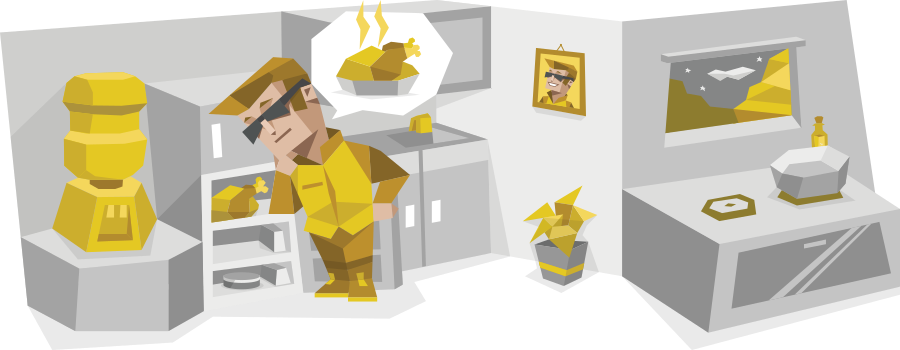

Your MBTI test report is ready.
Life is either a daring adventure or nothing at all.
Helen KellerPeople with the ESTP personality type (Entrepreneurs) are vibrant individuals brimming with an enthusiastic and spontaneous energy. They tend to be on the competitive side, often assuming that a competitive mindset is a necessity in order to achieve success in life. With their driven, action-oriented attitudes, they rarely waste time thinking about the past. In fact, they excel at keeping their attention rooted in their present – so much so that they rarely find themselves fixated on the time throughout the day.
Theory, abstract concepts, and plodding discussions about global issues and their implications don’t keep ESTP personalities interested for long. They keep their conversations energetic, with a good dose of intelligence, but they like to talk about what is – or better yet, to just go out and do it. They often leap before they look, fixing their mistakes as they go rather than sitting idle and preparing contingencies and escape clauses.

Diving Right In
ESTPs are a bold and brave bunch who are not afraid to take chances or act on their impulses. They live in the moment and dive into the action with an open mind and outward confidence. People with this personality type enjoy drama, passion, and pleasure, not for emotional thrills but because it’s so stimulating to their minds. They tend to make critical decisions based on factual, immediate reality in a process of rapid-fire rational stimulus responses.
This makes school and other highly organized environments a challenge for ESTPs. It certainly isn’t because they aren’t smart, and they can do well there, but the regimented, lecturing approach of formal education is just so far from the hands-on learning that these personalities typically enjoy. It takes a great deal of maturity to see this process as a necessary means to an end – something that creates more exciting opportunities.
Also challenging is that to ESTPs, it makes more sense to use their own moral compass than someone else’s. Rules were made to be broken. This is a sentiment that few school instructors or corporate supervisors are likely to share, and it can earn these personalities a certain reputation. But if they minimize the troublemaking, harness their energy, and focus through the boring stuff, ESTPs are a force to be reckoned with.
The Path Less Traveled
With perhaps the most perceptive, unfiltered view of any type, ESTPs have a unique skill in noticing small changes. Whether a shift in facial expression, a new clothing style, or a broken habit, people with this personality type pick up on hidden thoughts and motives where most types would be lucky to pick up anything specific at all. They use these observations immediately, calling out the change and asking questions even if it makes other people uncomfortable. ESTPs are as direct and straightforward as they come.
Sometimes ESTPs’ instantaneous observation and action is just what’s required, as in some corporate environments, and especially in emergencies.
People with the ESTP personality type are full of passion and energy, complemented by a rational, if sometimes distracted, mind. Inspiring, convincing, and colorful, they are natural group leaders, pulling everyone along the path less traveled, bringing life and excitement everywhere they go. Putting these qualities to a constructive and rewarding end is their true challenge.
ESTP Strengths
Bold—— People with the ESTP personality type (Entrepreneurs) are full of life and energy. There is no greater joy for them than pushing boundaries and discovering and applying new tools and ideas.
Rational and Practical—— These personalities love knowledge and philosophy, but not for their own sake. What’s fun for ESTPs is finding ideas that are actionable and drilling into the details so they can put them to use. If a discussion is completely arbitrary, there are better uses for their time.
Original—— Combining their boldness and practicality, ESTP personalities love to experiment with new ideas and solutions. They put things together in ways that no one else would think to.
Perceptive—— Their originality is helped by their ability to notice when things change – and when they need to change! Small shifts in habits and appearances stick out to ESTPs, and they use these observations to help create connections with others.
Direct—— ESTPs’ perceptiveness isn’t used for mind games – they prefer to communicate clearly, with direct and factual questions and answers. What you see is what you get with this personality type.
Sociable—— All these qualities pull together to make ESTP personalities natural group leaders. This isn’t something that they actively seek – they just have a knack for making excellent use of social interactions and networking opportunities.
ESTP Weaknesses
Insensitive—— Feelings and emotions come second to facts and pragmatism for people with the ESTP personality type. Emotionally charged situations are awkward, uncomfortable affairs, and blunt honesty doesn’t help here. They often have a lot of trouble acknowledging and expressing their own feelings as well, preferring not to dwell on heavy topics or the past for too long.
Impatient—— ESTPs move at their own pace to keep themselves entertained. Slowing down because someone else “doesn’t get it” or having to stay focused on a single detail for too long is extremely challenging for them.
Impulsive—— Impatience can lead ESTPs to push into uncharted territory without thinking of the long-term consequences. These personalities sometimes intentionally combat boredom with extra risk.
Unstructured—— ESTPs see an opportunity – to fix a problem, to advance, to have fun – and seize the moment, often ignoring rules and social expectations in the process. This can result in them getting things done, but it can also create unexpected social fallout if it rubs more traditional personality types the wrong way.
May Miss the Bigger Picture—— Living in the moment can cause ESTPs to miss the forest for the trees. People with this personality type love to solve problems here and now – perhaps too much. All parts of a project can be perfect, but the project will still fail if those parts do not fit together.
Defiant—— This type won’t be boxed in. Repetition, hardline rules, and sitting quietly while being lectured at are things that ESTP personalities don’t normally enjoy. They are action oriented and hands-on. Environments like school and much entry-level work can be so tedious that they’re intolerable, requiring extraordinary effort from ESTPs to stay focused long enough to get to freer positions.
When it comes to romantic relationships, people with the ESTP personality type (Entrepreneurs) can hardly be said to be pining away for their wedding day. Life is fun and full of surprises (something that they have particular skill in delivering), and they enjoy it all in the here and now.
ESTP personalities may not spend a lot of time planning for “someday,” but this doesn’t mean that they’re afraid of falling in love. They just don’t usually place too much value in labeling their relationships, and they tend to go with the flow when it comes to their love lives, making ESTPs truly thrilling dating partners.
ESTPs’ relationships are far from boring. Their improvisational style creates a seemingly never-ending list of activities and hobbies to be involved in, and they fully encourage their partner to partake.
These personalities love new ideas and the occasional philosophical discussion – but they need to be topics that can be explored through action together, not just idle talk. There’s musing about the causes and effects of epidemic obesity, and there’s training for a marathon together to promote healthy living.
The Challenge of Intimacy
In the early stages of a relationship, individuals with the ESTP personality type embody a sense of spontaneity and excitement. They are bold in their courting attempts, rarely hesitating to flirt openly even when others are present. Their natural charm and popularity often make them a magnet for potential partners. When coupled with their general indifference toward rejection, ESTPs tend to have an acute sense of self-assuredness that helps them seamlessly navigate the uncertainties of dating.
As time passes, it can be challenging for them to move their relationships to deeper, more emotionally intimate levels. Easily bored, ESTP personalities seek constant excitement – sometimes even intentionally exposing themselves to risk if they feel stuck. If their partner isn’t able to keep up, ESTPs may need to establish a more independent relationship dynamic that allows them more freedom. With the right mindset, this can pair beautifully with a deeper commitment to a long-term partner.
Loving without Inhibition
As with any relationship, it takes work and patience. Not every day can be a thrill a minute. But people with the ESTP personality type are adaptable, curious individuals, which certainly helps to keep the flame burning. Maintaining healthy relationships is the ultimate chance for them to exercise their talents in perceiving every change in their partner’s mood and behavior while also using their problem-solving abilities to address their needs.
People with the ESTP personality type (Entrepreneurs) can bring practically any party to life with their vibrant disposition – the best way to spot them is to look for the whirling eddy of people flitting about them as they move from group to group. Laughing and entertaining with a blunt and earthy humor, they love to be the center of attention.
ESTP personalities have an enviable imagination and an invigorating sense of spontaneity that tends to keep people on their toes. They love exploring interesting ideas, both in discussion and by going out and seeing for themselves, which means that ESTPs always seem to have some fun activity hidden up their sleeves. At the same time, they are easygoing, tolerant, and charming, making them naturally quite popular.
ESTPs are usually the life of any social gathering. Their charismatic storytelling and exhilaration for life create a contagious energy that most find hard to resist.
A Zest for Life
Hands-on, energetic activities like team sports and concerts are ESTPs’ idea of fun, and these environments give them plenty of chances to make new friends. There is little difficulty for them here – they seem to get along with just about everyone and to make new friends wherever they go. ESTPs live in the moment, and as a naturally confident personality type, they don’t worry much about what others think of them. This attracts friends who share their attitude and zest for life.
While not opposed to long philosophical discussions, and often enjoying the intellectual exercise, ESTPs are unlikely to develop friendships based solely around one-on-one discussions about global economic challenges or the role of religion in politics. Straightforward to the point of being blunt, people with this personality type call it like they see it, and an honest opinion in debate is a sure thing. But at their heart, ESTPs are people of action, preferring to do what can be done than to talk about what might someday be.
Adventure Awaits
Sitting idle, especially in boredom, is the bane of ESTPs’ existence.
Exploration, excitement, adrenaline, and risk – ESTPs’ friends should be prepared for all of these things. Often enough they are happy to perform for the crowd, but they also tend to encourage their friends to join in. Most personality types might take “thanks but no thanks” personally, but ESTPs are comfortable with who they are, and they are more likely to just shrug their shoulders and move on with the friends in their life who are game for adventure.
ESTPs tend to say that their parenting styles are more easygoing than those of their own parents.
In a lot of ways, people with the ESTP personality type (Entrepreneurs) are what many children would consider to be the perfect parent. Fun-loving and playful, flexible and understanding, ESTPs genuinely enjoy spending time with their children, and they know how to make sure that everyone is having fun. They have a natural curiosity and spontaneity that is perfectly matched to the wonder and insatiable desire to learn that young children have.
Freedom to Explore
ESTPs love hands-on activities. This means that their children usually don’t have to stand around waiting for someone to play catch with them or to help them build a model for school. Sports, hiking, and other practical, hands-on hobbies are all welcomed and encouraged. At the same time, given their aversion to rules and schedules themselves, ESTP personalities aren’t likely to forcibly enter their children into different kinds of clubs and teams. If their kids want to play softball, great – if not, well, they’ll just find something else to do.
ESTPs give their children freedom. They encourage them to use their own judgment (especially with the minor stuff) and to follow their hearts – to heck with what other people think. These personalities keep a close enough eye on their kids, using that knack for picking up on even the slightest changes in others’ moods and habits, that they can step in with extra guidance when things start to go wrong.
Maybe the greatest thing about ESTP parents is that they see their children as equal members of the family.
ESTP personalities do have one significant parental challenge though: Feelings tend to be seen as a bit of an irrational distraction, rather than a tool for expression and connection. If their children happen to be more sensitive, this can be a source of tension between these parents and their children. Frank honesty isn’t always the best solution to a child’s temper tantrum or a teenager’s relationship problem.
Focusing on Connection
Still, ESTPs often find that parenthood gives them all the motivation that they need to work on their sensitivity and emotional attunement. Through shared activities and experiences, these parents can create healthy, genuine bonds with their children, gaining a deeper knowledge of their children’s unique needs and dreams and ways of being in the world. People with the ESTP personality type have the added benefit of direct and understanding relationships – their children won’t feel so much like they have to hide their mistakes and challenges, the paragon of parent-child communication.
When it comes to career options for people with the ESTP personality type (Entrepreneurs), “action” is the word of the day. They think on their feet and are great at making quick decisions in the heat of the moment. At the same time, they’re affable individuals who always seem to make friends and connections wherever they go. Popularity and solid networking can be huge assets in the working world, and ESTPs have no problem using these people skills to their advantage.
This social intelligence, combined with their natural boldness and improvisational skill, makes sales, business negotiations, marketing, and even acting – any tense, competitive environment – a great fit for ESTPs. These personalities trust themselves to make the right call. Risks, big and small, are a part of life, and they don’t sit around waiting for some boss at the top to tell them what to do. This can get ESTPs into trouble, but often enough it’s exactly what’s needed and can boost them up the career ladder just as well.
It’s hard to imagine ESTPs choosing secure but boring jobs over less stable but more exciting careers.
Restrictions, rules, highly structured environments – these are great ways to drive people with this personality type crazy. ESTPs live life on their own terms, and this makes them brilliant businesspeople and freelancers. These roles also allow them to delegate the more tedious aspects of work – the accounting, meticulous research, and so forth – to those better suited. But even though ESTPs prefer positions that give them the freedom to make their own schedule decisions, they are not likely to enjoy working from home every single day. They much prefer to be out in the world surrounded by others in any work that they do.
ESTPs are curious, energetic people with a taste for action. There are those who analyze and manage the logistics of public safety resource distribution, and there are those who drive the ambulances, patrol the streets, and save lives with their own two hands – they are the latter. They are highly observant yet impatient, enabling them to take in the whole of a situation at a glance and then act. Any emergency response role is great for ESTP personalities, whether it be as paramedics, police officers, or soldiers.
The Thrill of the Game
This quality of living in the moment and craving immediate results for their efforts translates well into another field: sports. The thrill of competition, of pushing themselves to the physical limit to rack up just one more point for the win can have no comparison for ESTPs. Whether they are on the field as athletes themselves, coaching from the sidelines, or commentating from high above, people with the ESTP personality type revel in well-honed team effort and a well-executed plan, and any of these positions makes a fine line of work for them.
In just about any environment, the workplace included, it’s pretty easy to spot people with the ESTP personality type (Entrepreneurs). Boisterous and spontaneous, fun-loving and sometimes a little crass, ESTPs love tackling problems as they arise and telling great stories about their solutions afterwards. Naturally, some positions work better with these qualities than others, but these are adaptable individuals who can find a way to make just about any situation a little more interesting.
ESTP Subordinates
Their most challenging position is the one that most people have to start out in: as subordinates. While perfectly capable of exercising restraint on their own terms, ESTP personalities hate having others’ rules and regulations foisted upon them. They are known for their experimentation, improvisation, and quick thinking – if they’re not allowed to use these qualities and have to check in with a supervisor for every little thing, they’ll be bored and frustrated.
It is not uncommon for ESTPs to feel that their occupation sometimes requires them to repress certain facets of their personality.
ESTPs know well that risk equals reward, and they’ll gladly skirt more mundane tasks in favor of something a little more exciting in the hope that it catches someone’s attention. A plaque and a bonus go a long way for people with this personality type. Getting ahead by the tenets of staid reliability, quiet helpfulness, or mere seniority isn’t their way – ESTPs move forward by sheer force of personality in a well-handled crisis.
ESTP Colleagues
As colleagues, people with the ESTP personality type have a work hard, play hard mentality – as long as everyone else is pulling their weight, they’ll gladly pull their own and have a great time doing it. Charming and popular individuals that they are, networking comes naturally to ESTPs, and these qualities make it easy for them to get along with just about anyone.
At work, ESTPs are focused on action, results, and efficiency, and they usually expect the same of their colleagues.
At the same time, if they see a colleague as incompetent or, worse, lazy, they usually don’t hesitate to let them know. Emotional sensitivity is not their strong suit. ESTP personalities are very observant and well tuned to changes in their colleagues’ habits and moods – unless they themselves are the cause of distress.
ESTP Managers
Management positions are where ESTPs are usually most comfortable, as they often give them the most flexibility. Rules and traditions are a bother for people with this personality type – they’d rather try a bunch of new ideas with a chance of getting things done faster or better than have to pay attention to “the way things have always been done” or subordinates’ comfort with experimentation.
As managers, ESTPs are practical, with a focus on what does, or could, work best.
This can make for a chaotic environment, but their inspiring and enthusiastic personality makes them well-suited to handling such a thing. ESTPs enjoy living in the moment. Rather than some broad, intangible future accomplishment like “making customers happy,” they set clear, measurable, and attainable goals that keep things on track day-to-day. They keep their eyes on the finish line, but they get there step by step.
For ESTPs, known for their dynamic action and problem-solving abilities, it's important to balance their pursuit of excitement and new opportunities with long-term planning and attention to detail. Setting clear goals and improving organizational and follow-through skills can help them achieve their long-term vision more effectively. Additionally, paying attention to their emotional needs and interpersonal relationships can contribute to maintaining balance and stability.

Looking ahead, ESTPs should continue to leverage their action-oriented approach and decision-making skills, while also focusing on planning and detail execution. By balancing short-term excitement with long-term goals, they can achieve more comprehensive success and greater fulfillment in both their professional and personal lives.